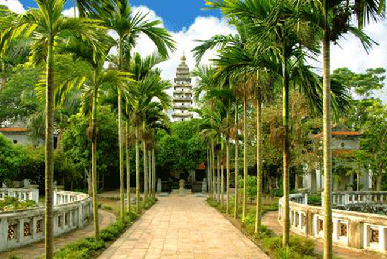
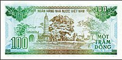

Địa chỉ: Phường Lộc Vượng, Thành Phố Nam Định, Tỉnh Nam Định
 Dưới triều đại Lý và Trần ở nước ta, Phật giáo rất phát triển, vì thế đã có nhiều công trình Phật giáo được xây dựng trong thời kì này nhưng đến bây giờ thì dường như không còn toàn vẹn. So với tháp Bình Sơn ở Vĩnh Phúc, tháp Huệ Quang ở Yên Tử Quảng Ninh thì tháp Phổ Minh ở Nam Định không những cao hơn mà còn tương đối nguyên vẹn. Nằm cách thành phố Nam Định 5km về phía Tây Bắc, ngọn tháp Phổ Minh nặng 700 tấn vẫn vững chãi, nằm hiên ngang, sừng sững giữa một đồng lúa chiêm trũng trong 700 năm qua như một bàn thạch. Tháp hình vuông, gồm 14 tầng, cao 19,5 m và được xây bằng gạch, bắt mạch để trần không trát. Nhìn toàn bộ cây tháp như thể hiện cho cái tâm hồn của Phật, giống như đóa sen mọc từ bùn lầy nước đọng nhưng vẫn ngát hương. Ngọn tháp Phổ Minh vươn cao trên trời xanh cùng toàn bộ di tích nhà Trần chính là những di sản quý báu của dân tộc, mãi mãi là niềm tự hào của nhân dân Nam Định. “Tứ bất tử” là một huyền thoại về việc nhân dân ta tôn vinh và thờ phụng “bốn vị thánh không bao giờ chết” trong đó có Liễu Hạnh công chúa, quê ở Nam Định. Bà là một vị thần, tượng trưng cho cuộc sống tinh thần, phúc đức, sự thịnh vượng. Và hôm nay đây, về với khu di tích Phủ Dầy này là khám phá hàng chục di tích liên quan đến cuộc đời và sự nghiệp của bà Chúa Liễu Hạnh ấy. Khu di tích nằm cách thành phố Nam Định 17km về phía Tây Nam và gồm ba di tích chính là: Phủ Tiên Hương, Phủ Vân Cát và Lăng Mẫu, đều là những công trình kiến trúc xây dựng với quy mô bề thế mang phong cách cổ truyền dân tộc hết sức độc đáo. Đặc biệt nhất có lẽ là lăng Mẫu, nơi có ngôi mộ cổ tương truyền là mộ của công chúa Liễu Hạnh, xung quanh có cây cối luôn xanh tươi tốt. Khu di tích Phủ Dầy có giá trị rất cao về trình độ kiến trúc nghệ thuật, đến đây vừa có thể thưởng ngoạn cảnh đẹp vừa có thể là dịp xin Mẫu ban cho điều lành và sự may mắn trong cuộc sống
Đơn vị: Sở Văn hóa Thể thao Du lịch tỉnh Nam Định
Đường dây nóng: 02283 640 829 - Mail: sovhttdl@namdinh.chinhphu.vn
Địa chỉ: 161 Nguyễn Du, Thành phố Nam Định